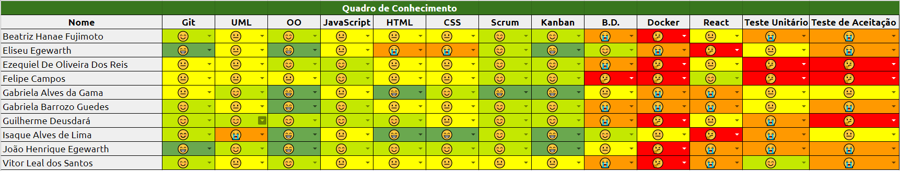
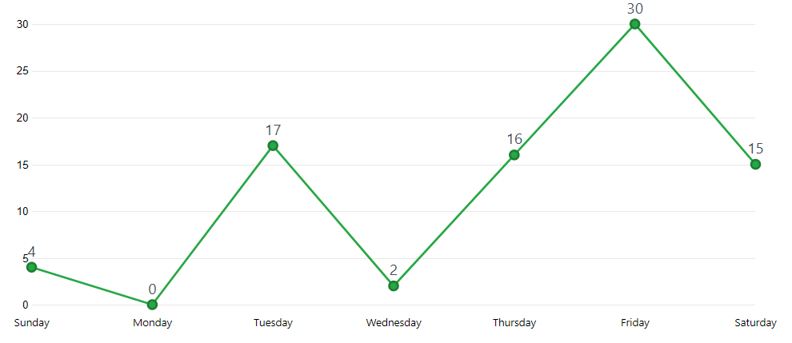

Sprint 1
Duração
Data início: 18/03/2018Data término: 24/03/2018
Duração: 7 dias
Objetivos
- Especificação e detalhamento dos requisitos iniciais do projeto;- Treinamentos das técnologias;
- Preparação para o desenvolvimento;
- Finalizar a adequação do projeto às diretrizes da comunidade do GitHub.
Sprint Backlog
#9 Adequar o projeto às diretrizes da comunidade do GitHub#10 Adicionar informações referentes ao projeto no README do projeto
#20 Criar Documento de Arquitetura
#21 Criar Documento de Visão
#22 Criar Protótipo de Baixa Fidelidade
#27 Criar Estrutura Analítica de Projetos (EAP)
#28 Criar Termo de Abertura do Projeto (TAP)
#29 Treimanento 3 - React Native
#31 Treinamento 4 - React Native
#34 Treinamento 5 - UML
#43 Adicionar informações pendentes dos membros da equipe
#54 Refatoração de documentos
#15 Criar Docker para React Native
#30 Criar Roadmap
Papéis
- Product Owner: João Egewarth- Scrum Master: Isaque Alves
- DevOps: Eliseu Egewarth
- Arquitetura: Gabriela Alves
- Desenvolvedores: Beatriz Hanae, Ezequiel De Oliveira, Felipe Campos, Gabriela Guedes, Guilherme Deusdará, Vitor Leal.
Pareamento
Houve um super pairing para fazer os documentos de Visão e Arquitetura. Para o Protótipo foi definido que todos os membros do desenvolvimento participariam.A equipe 1 ficou responsável pelo documento de Arquitetura e a equipe 2 por produzir o documento de Visão.
Equipe 1 - Felipe Campos, Gabriela Guedes, Ezequiel De Oliveira.
Equipe 2 - Beatriz Hanae, Guilherme Deusdará, Vitor Leal.
Pontos
Planejados:- 35 Pontos
Executados:
- 22 pontos
Burndown

Revisão
Duração total de: 45 minutos.A revisão da sprint ocorreu dentro do período planejado, nesta fase toda a equipe corrigiu os documentos de referente a Arquitetura; Visão; e Protótipo. As correções realizadas podem ser verificadas nos comentários das issues #20, #21 e #22. Também houve correções no Termo de abertura do projeto (TAP) e na strutura analítica do projeto (EAP). Tais alterações foram submetidas a validação de toda a equipe.
Dívidas Técnicas
#15 Criar Docker para React NativeDevido a uma falha no planejamento essa tarefa inicialmente não conseguiu ser concluída, pois era necessário entender o funcionamento ambiente de aplicações do React Native para automatizar a configuração do ambiente via Docker. Contudo, para as próximas sprints essa falha foi replanejada e se tornou um épico com duas atividades:
- #71 Analizar configuração de ambiente React Native
- #87 Criar Docker React-Native
A tarefa #87 é dependente da #71 portanto serão realizadas em duas sprints consecutivas.
#30 Criar Roadmap
Por desconhecimento sobre o escopo, esta tarefa não pode ser finalizada em tempo hábil.
Retrospectiva
Duração: 45 minutos.Para a fundamentação da retrospectiva os pontos positivos e negativos foram apresentados e discutidos pela equipe.
Pontos positivos
- Reuniões aos sábados;- Treinamentos de React Native;
- Organização do time de desenvolvimento;
- Equipe integrada;
- Time realizando a comunicação por meio das issues;
- Issues bem documentadas;
- Metodologia.
Pontos Negativos
- Atraso ocasionado pela curva de aprendizado;- Escopo com muita variação, causando confusão no time;
- Curva de aprendizagem representada pelo Fishbone;
- Ferramentas necessárias para prototipação;
- Erros com o Teletype do atom;
- Pontualidade.
Quadro de conhecimento
Frequência de commits
Desempenho
Riscos
Riscos identificados nessa sprint:
Risco |
Ação Preventiva |
Ação Reativa |
Trabalhar com outro grupo de EPS |
Definir um membro da equipe para realizar a comunicação entre os times. |
Aplicar arquitetura da API com microserviços. |
Atividades atrasadas |
Usar os indicadores para planejar as sprints. |
Replanejar a atividade para as próximas sprints. |
Os calculos e os gráficos de burndown dos riscos podem ser encontrados aqui!
Feedback
No decorrer da sprint o time apresentou uma ótima integração. Mesmo sendo o primeiro pareamento o time de desenvolvimento teve a liberdade de conjuntamente optar pela divisão do grupo em dois times, um para responsável em documentar a Arquitetura e outro para a Visão.
No entanto, para a sprint 2 os integrantes dos times serão remanejados mantendo apenas um integrante fixo que será o ponto focal para manter a qualidade do documento e ajudar os outros com a curva de aprendizado devido o conhecimento adquirido na sprint anterior na qual fizeram parte.
Contudo, a frequência de commits durante essa sprint apresentou problemas com técnicas pelo fato de codificar muito depressa, para melhorar isso nas próximas sprints foram apresentados indicadores à equipe e o planejamento com posicionamentos demonstrando como o time deve estar ao final de cada sprint.
Um dos grandes focos da sprint foi diminuir o score dos riscos na busca por priorizar os de maior impacto e a aplicação de ações reativas. Para exemplificar esse procedimento temos dois pontos que receberam como nota de impacto a pontuação 5, são elas: adaptação da equipe com as tecnologias necessárias e dividir o repositório da API com outra equipe de EPS.
De um lado, a ação reativa devido a alta pontuação recebida pelo ponto adaptação da equipe com as tecnologias necessárias foi a realização de dois treinamentos de React, e um de UML para auxiliar na produção do documento de Arquitetura.
Por outro lado para mitigar o risco de dividir o repositório da API com outra equipe de EPS foi definido a arquitetura de micro serviços, que permitiu uma maior autonomia de trabalho a cada um dos times.
Apenas para conhecimento houve uma atualização considerável no conhecimento de git, scrum, kanban e React por parte de toda a equipe em relação à sprint 0.
Vale reforçar que para a sprint 2 foi definida a mudança no uso das branchs do repositório removendo a branch "development" e a implementação da aplicação de Tags para o versionamento estável do produto. Outro importante fator foi a definição do início da produção do código. Afinal, optamos em aplicar histórias de baixo grau de dificuldade, considerando a curva de aprendizagem apresentada pela equipe até o fim da sprint 1.